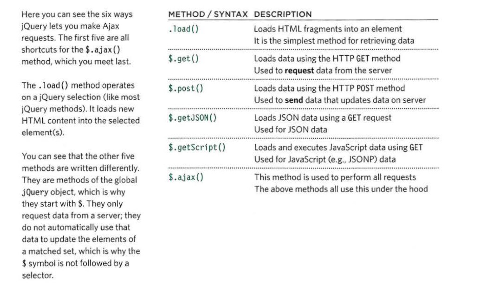
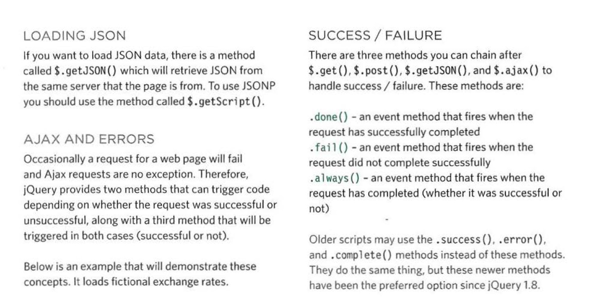
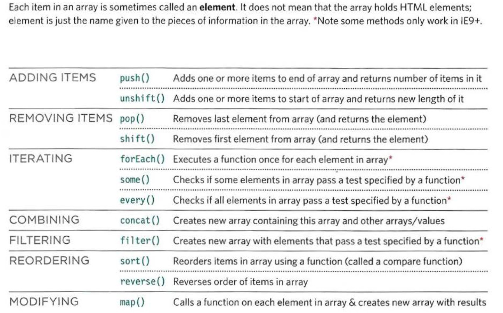
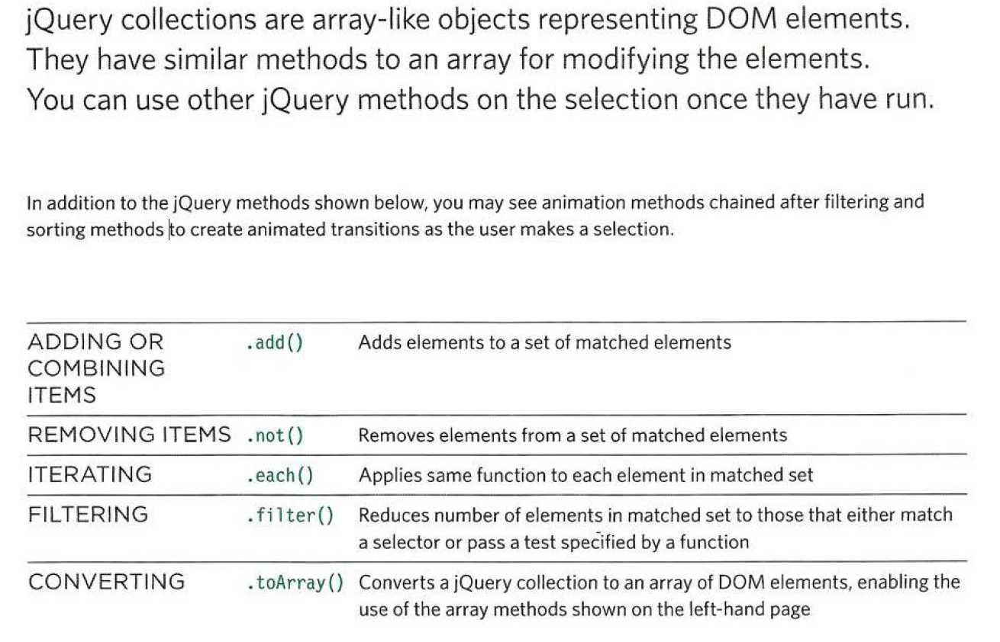

jQuery Ajax Methods

Image courtesy of Jon Duckett: "Javascript and jQuery", John Wiley & Sons Inc 2014
jQuery Ajax handlers

Image courtesy of Jon Duckett: "Javascript and jQuery", John Wiley & Sons Inc 2014
Filtering Data with js methods

Image courtesy of Jon Duckett: "Javascript and jQuery", John Wiley & Sons Inc 2014
Filtering data with jQuery methods

Image courtesy of Jon Duckett: "Javascript and jQuery", John Wiley & Sons Inc 2014
JS sort() method
var fruits = ["Banana", "Orange", "Apple", "Mango"];
fruits.sort();
// Apple,Banana,Mango,Orange
JS filter() method
var ages = [32, 33, 16, 40];
function checkAdult(age) {
return age >= 18;
}
console.log(ages.filter(checkAdult));